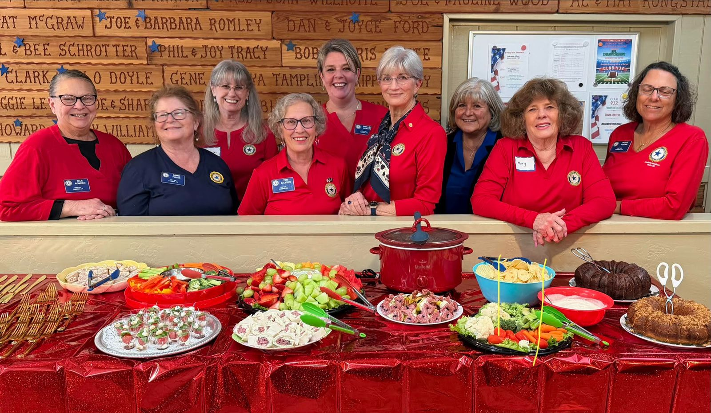
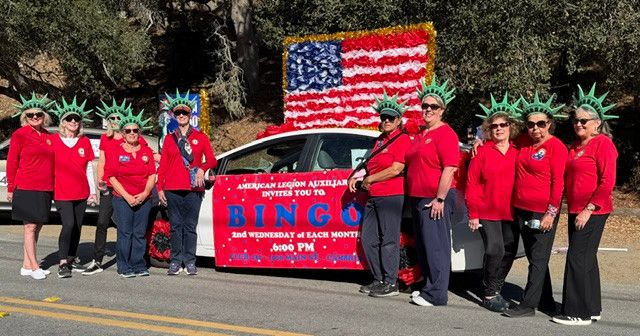
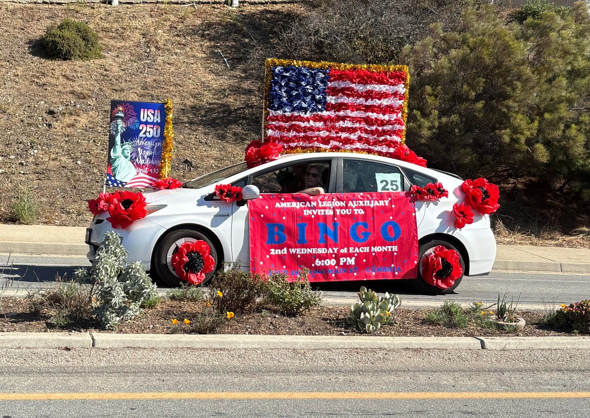
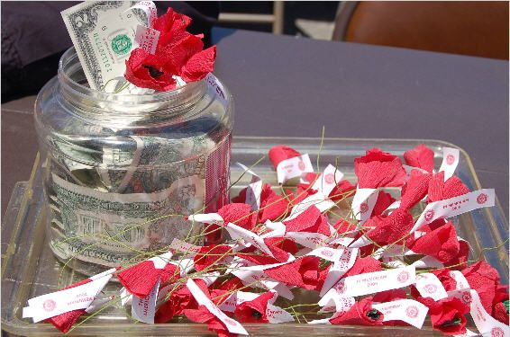

American Legion Auxiliary · Unit 432
Service, Not Self
Supporting The American Legion and honoring those who have served, by strengthening the lives of veterans, military members and their families, at home and abroad.
Our mission
For God and Country
We advocate for veterans, educate our community, mentor young people, and promote patriotism, good citizenship, peace and security. Through service, fellowship and compassion, we try to make a real difference for the people who have given so much for our freedom.
As one of the nation's largest patriotic service organizations, the American Legion Auxiliary has shown for more than a century what volunteers can do. Here in Cambria, Unit 432 does it one dinner, one Bingo card and one helping hand at a time.

In Cambria
What Unit 432 does

Thursday night dinners
A home-cooked meal with a new menu every week, $12. Tickets go on sale at 5 PM. First come, first served.

Bingo night
Doors open at 5 PM and games start at 6 PM. Everyone is welcome.

Poppy program
Our oldest tradition: red poppies in remembrance of those who served, with donations supporting veterans and their families.
National programs
How the Auxiliary serves
Veterans Affairs & Rehabilitation
Assistance, advocacy and volunteer service for veterans and their families, from visiting hospitalized veterans to connecting families with resources, so those who served are never forgotten.
Children & Youth
Programs that support the physical, emotional, educational and spiritual needs of young people, and help create safe, supportive places for children to thrive.
Girls State & Girls Nation
Premier leadership and civics programs where young women experience government in action. Since 1937, Girls State has introduced generations of young women to responsible citizenship.
Education
Supporting quality education and encouraging students to pursue their goals beyond high school, working with local schools and educators.
Community Service
Volunteer projects and partnerships that respond to local needs and make our community stronger, more caring and more connected.
Auxiliary Emergency Fund
“Women helping women”: temporary financial help for eligible Auxiliary members facing an emergency.
Legislative & National Security
Helping members stay informed about issues affecting veterans, military families and our nation's security, and speak up to their elected representatives.